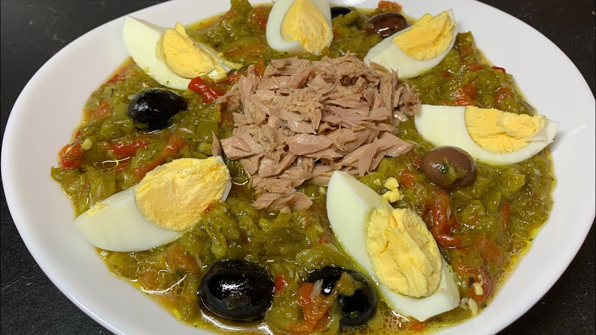

Slata Machwiya

Description
Slata meachwiya literally means "grilled salad" as the vegetables are grilled over an open flame.
Ingredients
- 4 whole onions
- 5 whole tomatoes
- one whole garlic bulb, or several whole garlic cloves with the peel
- 4-5 whole green Anaheim peppers
- 2 whole bell peppers
- 2-3 whole jalapeno peppers
- 1/2 tsp salt
- ¼ tsp black pepper
- ¼ c water
- 2 tbs Olive Oil
- Olives
- Tuna
- Hard boiled eggs
Steps
- Clean and dry the vegetables that have skin.
- Char your vegetables a few at a time. For the best flavor, do this over a charcoal grill. Turn the vegetables every so often to get an even char all the way around.
- Once all your vegetables are charred, place in a plastic bag and tie it closed, or in a bowl covered with plastic wrap. This allows the vegetables to cool and sweat a bit which helps with the peeling process. Let them sit aside for about 10-20 mins.
- Begin peeling the outer skin and peel off of your vegetables. Remove any stems as well as any seeds you wish to omit.
- Once all of your ingredients have been peeled, place a few vegetables at a time into a food processor and pulse until a little smooth but there are still some small chunks. Place each batch aside until you have processed all of your ingredients. Mix well and add salt and pepper to taste and adjust as needed.
- Place the finished dish on a serving plate and garnish with slices of hard boiled eggs, good quality tuna, olives, and a healthy drizzle of olive oil. Serve with fresh baguette or homemade bread and dig in!